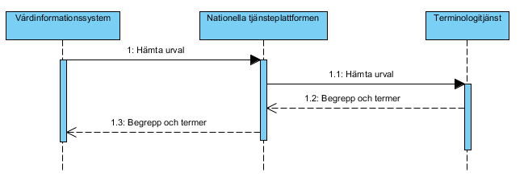
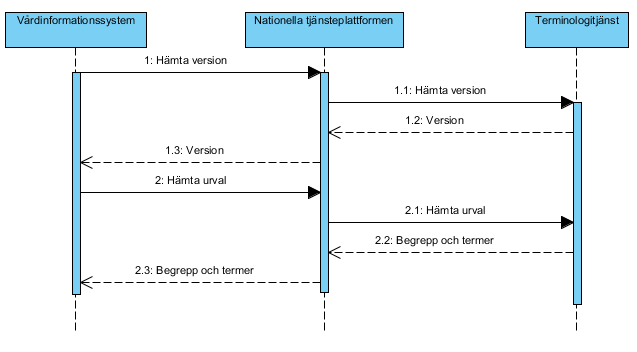
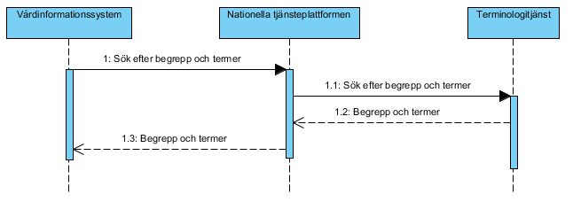

infrastructure: informationstructureservice: terminology
1.0.0 - draft
infrastructure: informationstructureservice: terminology - Local Development build (v1.0.0) built by the FHIR (HL7® FHIR® Standard) Build Tools. See the Directory of published versions
Källa: Tjänstekontraktsbeskrivning Terminologitjänst, version PA1 (2013-10-30), Tjanstekontraktsbeskrivning_Terminologitjanst.docx.
Detta kapitel beskriver de flöden som är relevanta för tjänstedomänen. Beskrivningarna är i form av sekvensdiagram som tar hänsyn till vilka tjänstekontrakt som nyttjas i de olika stegen.
Nedanstående sekvensdiagram visar ett vårdinformationsystem som hämtar ett urval med begrepp och termer från en producent av terminologitjänstekontrakten. Det tjänstekontrakt som används är GetTerminologySubset. Rekommendationen är att konsumenter av urvalstjänsten lagrar en kopia av resultatet av anropet lokalt för att inte vara beroende av terminologitjänstens tillgänglighet.

Figur 1. Sekvensdiagram hämta urval.Nedanstående sekvensdiagram visar: Hur ett vårdinformationssystem hämtar en versionsidentifierare för ett eller flera urval från terminologitjänsten. Det tjänstekontrakt som används är GetTerminologySubsetInformation. Hur ett vårdinformationssystem uppdaterar ett urval genom att hämta de begrepp och termer som ingår i urvalet från terminologitjänsten. Det tjänstekontrakt som används är GetTerminologySubset.

Figur 2. Sekvensdiagram hämta endast uppdaterade urval. Versionsidentifieraren som hämtas i första steget använder konsumenten för att jämföra med sin befintliga version av urvalet. I flödet hämta endast uppdaterade urval hämtas således endast begrepp och termer då konsumenten inte redan har den senaste versionen av urvalet. Första gången konsumenten hämtar urvalet finns förstås ingen befintlig versionsidentifierare och konsumenten kan då välja att hämta urvalet direkt utan att först läsa ut aktuell version. Detta sätt att uppdatera lokal terminologi är att föredra om inte det efterfrågade urvalet är litet.Nedanstående sekvensdiagram visar ett vårdinformationsystem som söker ut begrepp och termer från terminologitjänsten. Det tjänstekontrakt som används är GetConcepts.

Figur 3. Sekvensdiagram sökning i terminologi.Följande tabell specificerar vilka kontrakt som är obligatoriska att realisera för respektive flöde.
| Tjänstekontrakt | Flöde 3.1.1 | Flöde 3.1.2 | Flöde 3.1.3 |
|---|---|---|---|
| GetTerminologySubset | X | X | |
| GetTerminologySubsetInformation | X | ||
| GetConcepts | X |
Den logiska adressen för samtliga tjänster inom domänen är HSA-id för system eller organisation som är ansvarig för det urval eller den terminologi som söks.
Används ej i denna version.